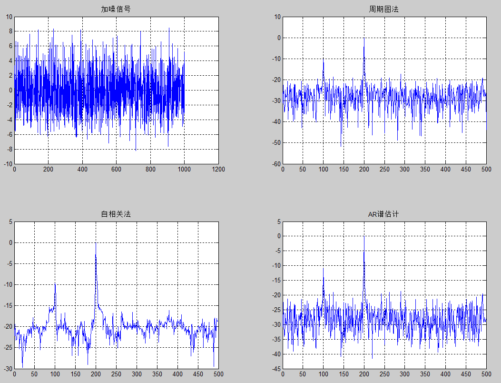

下面的matlab程序分别使用周期图法、相关函数法以及AR谱方法计算信号的功率谱。
% power spectrum estimated
clear all;
clc;
close all;
Fs=1000; % 采样频率
nfft = 1024; % fft计算点数
%产生含有噪声的序列
n=0:1/Fs:1;
xn=cos(2*pi*100*n)+3*cos(2*pi*200*n)+(2*randn(size(n)));
subplot(2,2,1);plot(xn);title('加噪信号');grid on
% 周期图法
window=boxcar(length(xn)); %矩形窗
[psd1,f]=periodogram(xn,window,nfft,Fs); %直接法
psd1 = psd1 / max(psd1);
subplot(2,2,2);plot(f,10*log10(psd1+0.000001));title('周期图法');grid on
% 自相关法
cxn=xcorr(xn,'unbiased'); %计算序列的自相关函数
CXk=fft(cxn,nfft);
psd2=abs(CXk);
index=0:round(nfft/2-1);
k=index*Fs/nfft;
psd2 = psd2 / max(psd2);
psd2=10*log10(psd2(index+1)+0.000001);
subplot(2,2,3);plot(k,psd2);title('自相关法');grid on
% AR谱
psd3 = pyulear(xn, Fs, nfft);
psd3=psd3/max(psd3);
psd3 = psd3 / max(psd3);
index=0:round(nfft/2-1);
psd3=10*log10(psd3(index+1)+0.000001);
subplot(2,2,4);plot(k, psd3);title('AR谱估计');grid on;
现在就此来说是关于功率谱的几点理解：
功率谱的数据都是相对值，他无法给出信号的实际绝对幅值，一般只要看峰值之间的比值就行了，也可以对数据归一化
功率谱中的峰值代表的是信号中的周期成分，隐含的周期信号能量要比随机信号大（这个一般能理解的）。比如，上面xn是
xn=cos(2*pi*100*n)+3*cos(2*pi*200*n)+(2*randn(size(n)));其周期包括200Hz及100Hz，200Hz的幅值比100Hz大，再看功率谱图中，清晰的体现了信号中含有200Hz和100Hz的信号。
直接法又称周期图法，它是把随机序列x(n)的N个观测数据视为一能量有限的序列，直接计算x(n)的离散傅立叶变换，得X(k)，然后再取其幅值的平方，并除以N，作为序列x(n)真实功率谱的估计
间接法先由序列x(n)估计出自相关函数R(n)，然后对R(n)进行傅立叶变换，便得到x(n)的功率谱估计
直接采用平均周期图法求功率谱时，功率普形状呈锯齿形，谱峰点的准确位置不大好定。于是可以采用其他的方法对谱进行平滑操作，平滑化，仅仅是为了使图形光滑，并不会使得波的本质受到歪曲和畸变。反过来说，由于不纯的东西去掉了，本质的东西必然会更加显示出来！平滑化的程度可以根据所分析的信号，选择合理的窗函数和带宽！
平均周期图法和其他方法求出的结果，参数条件取得一样的话，可以得到完全相同的结果。